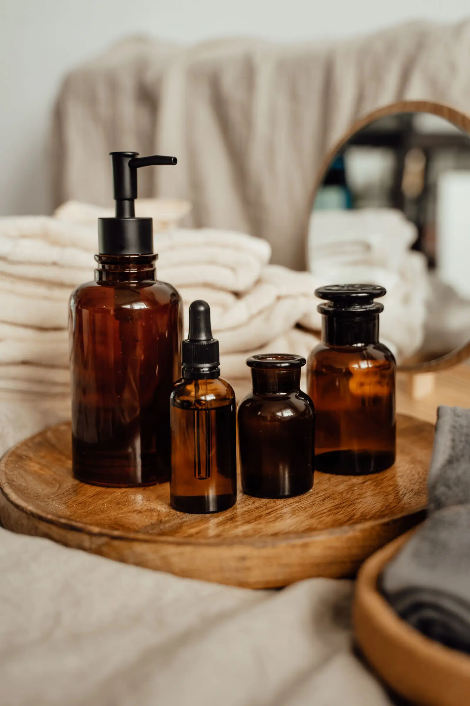
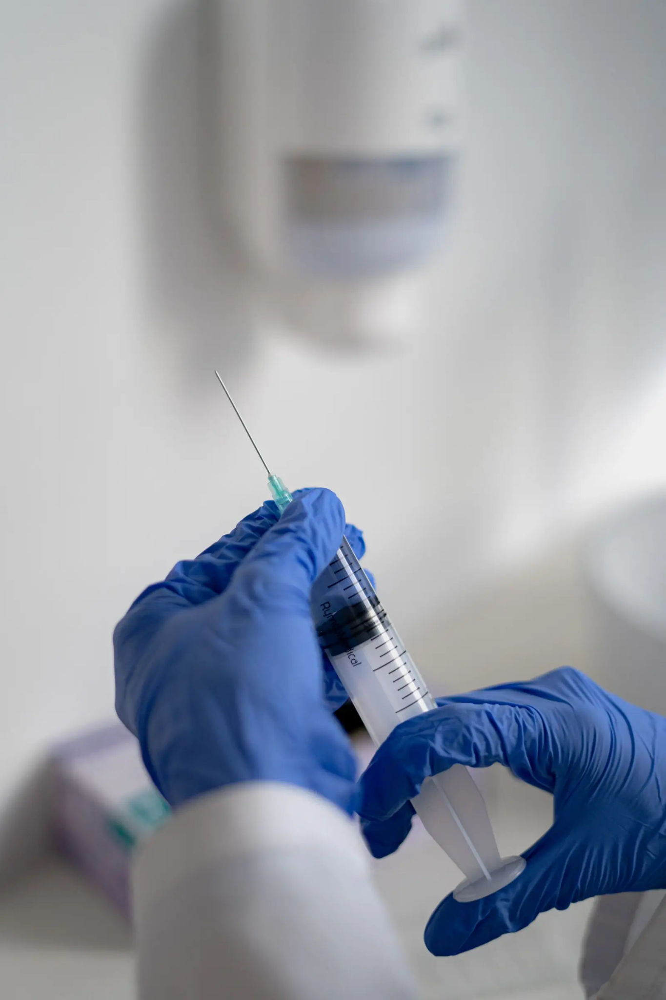
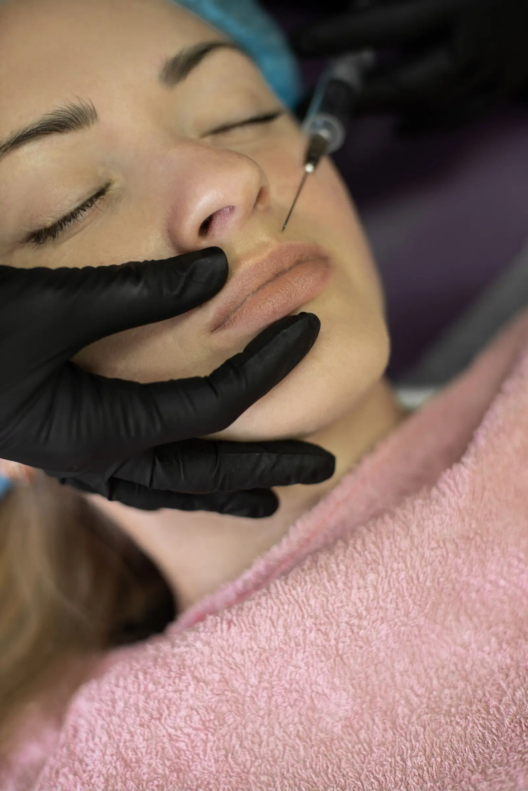
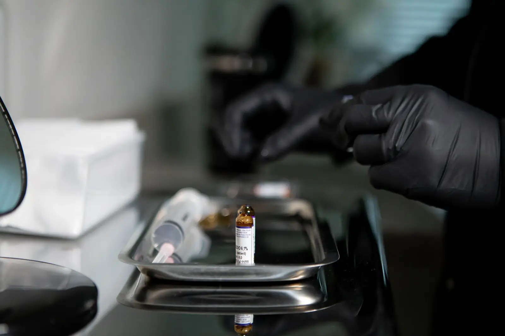
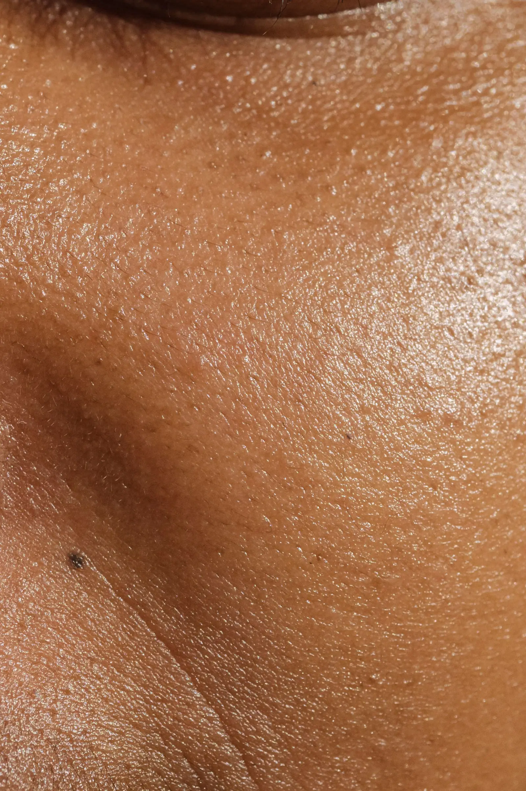
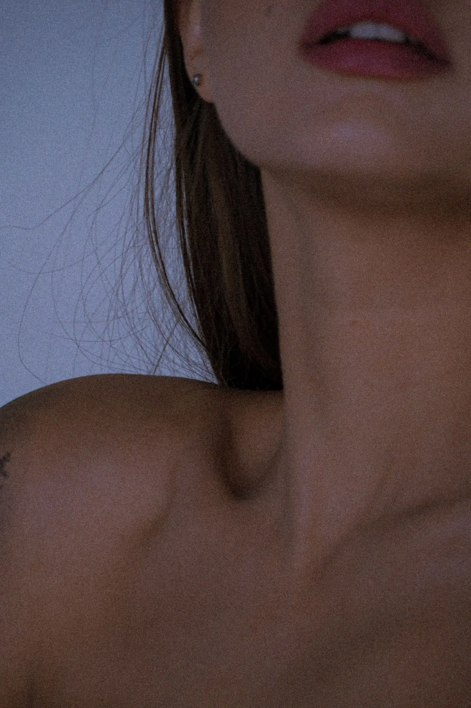

Foto ilustrativa · não retrata a clínicaESTÉTICA AVANÇADA · MIRASSOL
A sua beleza.
O seu jeito.
Com Dra. Izis do Val, conheça possibilidades de cuidado para expressão, lábios, firmeza e textura da pele.
Biomédica · CRBM 12327
Office Miracenter · Centro de Mirassol

Imagem ilustrativa · não representa paciente ou resultado da Dra. Izis01 / EXPRESSÃO
Toxina botulínica (Botox)
Expressão, com planejamento.
O que é
A toxina botulínica reduz temporariamente a atividade de músculos específicos envolvidos nas linhas de expressão.
Para quem avaliar
Para quem deseja avaliar linhas relacionadas aos movimentos do rosto. A indicação, as áreas e os cuidados dependem da avaliação individual.

Imagem ilustrativa · não representa paciente ou resultado da Dra. Izis02 / CONTORNO
Preenchimento labial
Cada lábio tem uma identidade.
O que é
Procedimento injetável voltado ao contorno e ao volume dos lábios, planejado de acordo com a anatomia e os objetivos de cada pessoa.
Para quem avaliar
Para quem quer conversar sobre proporção, definição ou volume labial. O produto e a quantidade são definidos após avaliação.

Imagem ilustrativa · não representa paciente ou resultado da Dra. Izis03 / FIRMEZA
Bioestimulador de colágeno
Um olhar para a firmeza da pele.
O que é
Tratamento que utiliza substâncias com a finalidade de estimular a produção de colágeno. Seu planejamento considera a área e as características da pele.
Para quem avaliar
Para quem percebe perda de firmeza e deseja saber se a bioestimulação é adequada. A resposta varia conforme o organismo e o produto utilizado.

Imagem ilustrativa · não representa paciente ou resultado da Dra. Izis04 / TEXTURA
CO₂ fracionado
Textura merece atenção.
O que é
Laser que atua em pequenas áreas da pele, distribuídas de forma fracionada, para promover sua renovação. Exige cuidados específicos de recuperação.
Para quem avaliar
Para quem deseja avaliar textura irregular, linhas ou determinadas cicatrizes. Tipo de pele, exposição ao sol e histórico de saúde precisam ser considerados.

Imagem ilustrativa · não representa paciente ou resultado da Dra. Izis05 / TECNOLOGIA
Endolaser
Tecnologia começa na indicação.
O que é
Técnica que leva energia laser sob a pele por meio de uma fibra óptica. A região tratada e os parâmetros exigem planejamento individual.
Para quem avaliar
Para quem quer avaliar queixas de flacidez e contorno. A adequação, os riscos, as limitações e a recuperação devem ser discutidos antes do procedimento.
O PRÓXIMO PASSO É UMA CONVERSA
Vamos olhar para
o seu momento?
Conte o que você gostaria de cuidar. A avaliação considera suas expectativas, seu histórico de saúde e as particularidades da sua pele.
Conversar sobre uma avaliação ↗(17) 99177-4417
Encontre a Dra. Izis
Office MiracenterRua Fernando Costa, 2451
2º andar · Sala 203 · Centro
Mirassol/SP · CEP 15130-025Abrir localização no Google Maps ↗
Consulte os horários disponíveis pelo WhatsApp.
@dra.izisdoval ↗Ver mapa da localização +
Procedimentos estéticos possuem riscos, contraindicações e cuidados de recuperação. As informações desta página não substituem avaliação individual. Resultados variam de pessoa para pessoa; não há garantia de resultado. As fotos são ilustrativas, sem relação com pacientes, equipe ou resultados da profissional.